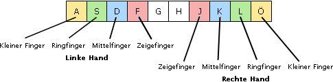

Installation | Inhaltsverzeichnis | Programmstart
Installation | Inhaltsverzeichnis | Programmstart 
4. Ergonomie am Arbeitsplatz
Tipps zur Anwendung des Zehnfingersystems
1. Die Finger nehmen zunächst die Grundstellung ein (sie wird auch zu Beginn jeder Lektion angezeigt). Nach jedem Tippen einer Taste kehren die Finger in die Grundstellung zurück.

2. Nehmen Sie eine aufrechte Haltung ein und vermeiden Sie es in jedem Fall auf die Tastatur zu sehen. Ihr Blick sollte stets auf den Bildschirm gerichtet sein.
3. Legen Sie die Oberarme am Körper an und lassen Sie die Schultern hängen. Die Unterarme bilden einen rechten Winkel zu den Oberarmen. Legen Sie die Handgelenke nicht ab und lassen Sie sie nicht durchhängen.
4. Bleiben Sie während des Schreibtrainings entspannt.
5. Versuchen Sie möglichst fehlerfrei zu tippen. Es ist deutlich ineffizienter schnell zu tippen, wenn Sie dabei viele Fehler machen.
6. Einmal mit dem Zehnfingersystem angefangen, sollten Sie es tunlichst vermeiden wieder zu Ihrem "alten System" zurück zu wechseln (auch wenn es mal schnell gehen muss).
 Installation | Inhaltsverzeichnis | Programmstart
Installation | Inhaltsverzeichnis | Programmstart 
© 2006-2011 Tom Thielicke IT Solutions